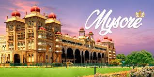
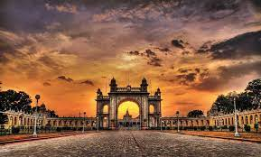
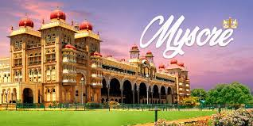
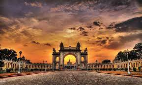

The Mysore Palace, officially known as Mysuru Palace, is a historical palace and the royal residence (house) at Mysore in the Indian state of Karnataka.
It is the official residence of the Wadiyar dynasty and the seat of the Kingdom of Mysore.The palace is in the centre of Mysore, and faces the Chamundi Hills eastward. Mysore is commonly described as the 'City of Palaces', and there are seven
Mysore Bus Stand Contact Address, Phone Number, Email Id details. Mysore Bus Stand is an Indian largest and popular bus terminal located in Mysore, India. Many Indian’s looking for the contact information of the terminal for complaint, booking or refund related queries. Right Now, we sharing details of Mysore Bus Stand all India numbers, call centre number, refund contact number & enquiry contact numbers that can help you to get connected with the support team.
Mysore zoo
Mysore Zoo (Now Mysuru Zoo)[4] (officially the Sri Chamarajendra Zoological Gardens) is a 157-acre (64 ha) zoo located near the palace in Mysore, India. It is one of the oldest and most popular zoos in India, and is home to a wide range of species (168). Mysore Zoo is one of the city's most popular attractions.
While mainly depending on entry fees for its financing, an adoption scheme introduced in the early 2000s has been a success. Celebrities, institutions, animal lovers and volunteers of various clubs in the zoo have contributed directly to the welfare of the zoo inhabitants.
Krishna Raja Sagara, also popularly known as KRS, is a lake and the dam that creates it. They are close to the settlement of Krishna raja sagara in the Indian State of Karnataka. The gravity dam made of surki mortar is below the confluence of river Kaveri with its tributaries Hemavati and Lakshmana Tirtha, in the district of Mandya.[2].
Mysore Temple (Now Mysuru Zoo)[4] (officially the Sri Chamarajendra Zoological Gardens) is a 157-acre (64 ha) zoo located near the palace in Mysore, India. It is one of the oldest and most popular zoos in India, and is home to a wide range of species (168). Mysore Zoo is one of the city's most popular attractions.
While mainly depending on entry fees for its financing, an adoption scheme introduced in the early 2000s has been a success. Celebrities, institutions, animal lovers and volunteers of various clubs in the zoo have contributed directly to the welfare of the zoo inhabitants.
 





{kind=link}